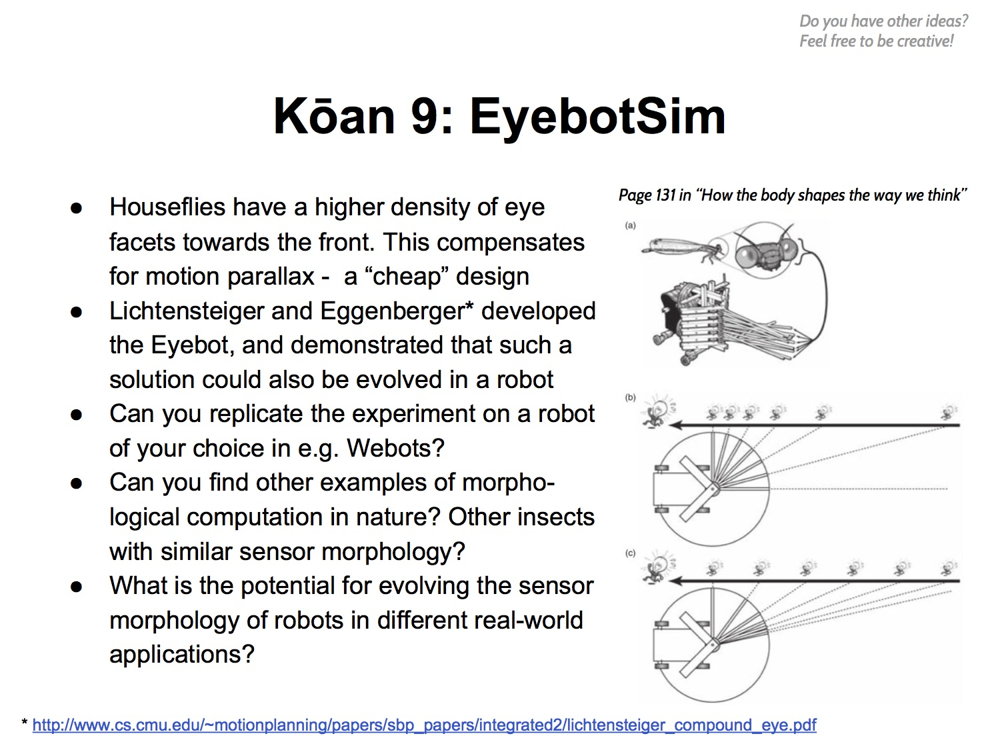

2015 Student Presentations
The presentations are now starting, checkout the Koan Google+ page for the Hangouts on Air rooms used:
Presentation schedule
- Thursday 28 January 2016:
| Time slot | Group |
|---|
| 9:00 – 9:25 CET | Group 6A |
| 10:00 – 10:25 CET | Group 11 |
- Friday 5 February 2016:
| Time slot | Group |
|---|
| 9:00 – 9:25 CET | Group 8B |
| 9:30 – 9:55 CET | Group 7 |
| 11:30 – 11:55 CET | Group 8A |
- Tuesday 9 February 2016:
| Time slot | Group |
|---|
| 9:00 – 9:25 CET | Group 1 |
| 9:30 – 9:55 CET | Group 3/12 |
| 10:00 – 10:25 CET | Group 5 |
Timeline
- 29 October: Kōans published
- 5 November (midnight CET): Deadline, select a Kōan
- 10 November (delayed): Student groups published
- 3 December (midnight CET): Preliminary design report
- 27 January, 5 and 9 February: Group presentations
Active Kōans
Kōan 1: Soft catch

Kōan 3: Take Puppy out for a walk
Kōan 5: A soft touch
Kōan 6: Evolution of brain and body
Kōan 7: Wearable soft robotics
Kōan 8: “Useful” robot collaboration from local rules
Kōan 11: Evolving robot explorers
- Description: Pdf
- Groups:
| Group 11 |
|---|
| Tutors: | Jimmy BARAGLIA (P), Tapio Tarvainen (S) |
| Students: | Robert Duda |
| Tanja Kaiser |
| Benjamin Schlotter |
| Jan Laermann |
| Andreas Ganske |
| Bohan Liu |
Kōan 12: Attractor States as the
Basis of Symbol Grounding
Potential Kōans
Kōan 2: From passive to actuated dynamic walking
- Description: Pdf
- Groups: TBA
Kōan 4: Learning how to swim like a fish
- Description: Pdf
- Groups: TBA
Kōan 9: EyebotSim

- Description: Pdf
- Groups: TBA
Kōan 10: Passive walking and hopping on a comet
- Description: Pdf
- Groups: TBA
Kōan 13: Simulation and evolution of an ecological system
- Description: Pdf
- Groups: TBA
Grading
- Preliminary design report (25%)
- Repository Wiki* (preferred) or 4 page report
- Ideas, plans and current progress
- Graded by your tutor(s)
- Group presentations (75%)
- Google Hangouts (typically)
- Evaluated by a presentation panel
* All groups are encouraged to publish material openly on for example Bitbucket, GitCafé or GitHub.
Cyberbotics Webots
- Download the Webots simulator
- Register for 30 day trial of Webots Pro
- IMPORTANT: Use email registered with ShanghAI Lectures website account (let us know if not)
- License will be extended until end of semester (participating students/tutors)
- Useful tutorials here!
Useful Webots examples
Archive
Access to the group project Kōans from previous years:
Recordings of the presentations from previous years are available here:
General questions on group projects:
Checkout our Kōan Google+ page:
 Wikipedia: “A Kōan (公案) … is a story, dialogue, question, or statement, which is used in Zen-practice to provoke the "great doubt", and test a student's progress in Zen practice.”
Wikipedia: “A Kōan (公案) … is a story, dialogue, question, or statement, which is used in Zen-practice to provoke the "great doubt", and test a student's progress in Zen practice.”